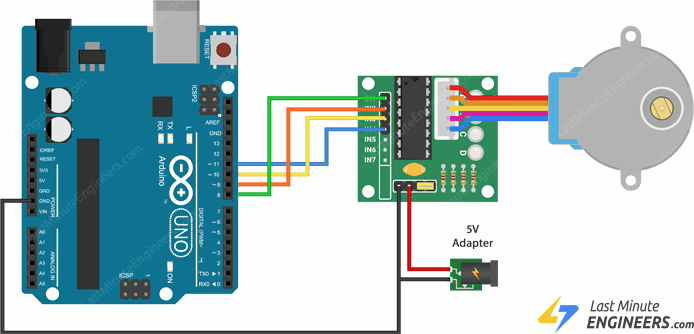

Introduction
Output Devices are often called actuators, which is a component that receives signal to control movement. Using computer processors, we are able to control actuators precisely, as well as the amount of power supplied to control the speed of motion. Output devices usually respond and react slower as compared to the signals sent by the computer processor. Hence, we usually need to insert a delay so that the output devices will be able to register the output signal.
- LED Display: LED, or Light-emitting Diode, is a semiconductor light source. This means that it only allows current to pass through one way. Hence, when connecting an LED in a circuit, the direction of the LED is important.
- Single LED: A simple LED that is referenced by its diameter. They are only able to output a colour. LED are unable to carry a large amount of current, hence, a current limiting resistor is required to ensure that the LED does not blow. Single LED have 2 legs, the longer one to be connected to 5V (or a digital pin) and the shorter one to ground. The higher the value of the resistor, the dimmer the LED will be. Single LED can be controlled in the Arduino program using digitalWrite(state), where the state is either HIGH to turn the LED on and LOW to turn it off.
- RGB LED: A LED component that is comprises of 3 LED in the housing (Red, Green and Blue). Unlike the Single LED that has only 2 legs, RGB LED have 4, the 1st, 3rd and 4th controls the Red, Green and Blue LED respectively and each of them is connected to a different digital pin on the UNO, and the 2nd is to the ground. A current limiting resistor is required on each of the legs except for ground. analogWrite(pin, value) is used to control each of the LED, where pin is the pin of the LED you want to control and value is a integer between 0-255, where the higher the value, the brighter the specific colour of LED.
- 7-Segment Display: 7 segments of individual LEDs are enclosed in a single housing to form a single digit. By turning on and off certain segments, digits from 0-9 can be shown. The display has 10 pins, 7 of them controls each segment, 1 controls the LED for a decimal point and 2 is connected to Vcc and Gnd. All 8 pins that controls the LED each require a current limiting resistor. The TM1637 Grove 4-digit Display Module is a component with 4 7-segment display and uses only 2 digital pins on the UNO. However, the use of the TM 1637 library is required to program this component.
- NeoPixels LEDs: A strip of RGB LEDs serially interconnected together. Each LED in the strip can be individually addressed and programmed. With a USB powered in the arduino UNO, there is not enough current to light up more than 8 LEDs. NeoPixels make lighting easily configurable, the intensity can be changed with the number of LEDs used, and each LED can have different colour to show different patterns and effects. A library must be used to program, which can be downloaded from Adafruit.
- Single LED: A simple LED that is referenced by its diameter. They are only able to output a colour. LED are unable to carry a large amount of current, hence, a current limiting resistor is required to ensure that the LED does not blow. Single LED have 2 legs, the longer one to be connected to 5V (or a digital pin) and the shorter one to ground. The higher the value of the resistor, the dimmer the LED will be. Single LED can be controlled in the Arduino program using digitalWrite(state), where the state is either HIGH to turn the LED on and LOW to turn it off.
- LCD Display: LCD, or Liquid Crystal Display, is an output device that can output characters with 2 rows, each with 16 characters. The LCD comes with a potentiometer that can be adjusted to change the contrast on the LCD. The LCD that come with a I2C interface only require 2 wires (SCL and SDA) to receive data from the UNO on top of Vcc and Gnd. To control the LCD, the library LiquidCrystal_I2C.h is required.
- DC Motors: These motors uses direct current power to spin at high RPM.
- Series DC motors: These DC motors are simple, where the rotational speed is proportional to the applied voltage and direction is determined by the direction of current applied. Most motors draw a lot of current to operate, hence, they cannot be directly connected to a GPIO pin. In order to control these motors, there are different methods available: Relays, NPN transistors/MOSFET and H-Bridge. Relays are used to control direction, not speed. NPN transistors acts as a switch to control the motor, and using PWM, we can control the speed. H-Bridge allows control of both speed and direction, and the L298N can be used to control 2 motor.

- Servo Motors: They have an internal control circuit with geared motors, and are controlled using pulses. These pulses determine the position or rotation of the servo motor. There are 2 types of servo motors, Positional and Continuous. Positional Motors have limited range of movement, and is mostly used to be accurately moved to a certain position or direction, i.e. FS90 (120 degree angle range). Continuous Rotational motor, such as the FS90R, works with a 360 degree rotation, where the pulses control direction of rotation or stoppage.
- Stepper Motors: Stepper Motors are precision motors that can rotate a centain, specified number of steps. Each step is a division (in degrees) of the full rotational movement done by activating the motor coils, in turn. Servo and Stepper motors are very similar in the sense that they are used for precison turning but differ from how they calculate how much to turn. Stepper uses steps and there are max steps per motor. The 28BYJ-48 Unipolar stepper motor that was provided has a maximum of 2038 steps. To control the motor, the ULN2003 motor control board is used which contains transistors to drive the motor. It is able to provide an external power supply outside of the arduino, which is useful since the stepper motor consumes about 240 mA even when it is not in motion. In order to control the motor, the library 28BYJ needs to be used.
